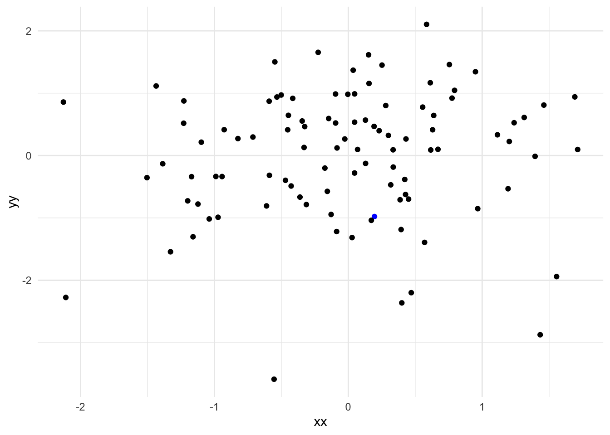

Chapter 7 Linear and logistic regression
Regression is the first machine learning algorithm. It allows you to model a target variable \(y\) depending on a set of explanatory variables or features \(X\) such that \(y=f(X) + \epsilon\) where \(f\) is a linear function (for linear regression).
7.1 Linear regression
We will jump directly to the multiple regression model, which is the generalization of the simple linear model, which you can check here
7.1.1 General presentation
The basic equation of the linear regression is \[ y_i = x_i \cdot b + \epsilon_i \Leftrightarrow y_i = \sum_{j=1}^p x_{ij} b_j + \epsilon_i\]
Where :
- \(x_i\) is a row-vector of size p (number of explanatory variables), containng the values of each feature of observation i. It is the row i of the matrix \(X = (x_{ij})\)
- b is a column-vector of coefficients, one per explanatory variable
- \(\epsilon_i\) is the error term for observation i
This regression is said to be linear because it is linear in the parameters, you can however transform the original variables at will with non-linear functions (see feature engineering).
The biggest assumptions of this model are :
- Observations are iid
- There is no perfect multi-collinearity among features
- \(\epsilon_i\) has a zero conditional mean \(\mathbb{E}(\epsilon | X)=0\)
This last condition helps us to derive an estimator for b (which can be derived in several ways) which is called the OLS estimator (Ordinary Least Squares), which is the solution of the optimization program :
\[\hat{b}=argmin_b \sum_{i=1}^n \epsilon_i^2 = argmin_b \sum_{i=1}^n (x_i-x_i \cdot b)^2\]
The solution is \(\hat{b} = (X'X)^{-1}X'y\) where \(X'=t(X)\). \((X'X)^{-1}X\) is the projection matrix over the hyperplane defined by the features.
 ### Implementation and diagnostics
### Implementation and diagnostics
To implement a linear regression with R, we use the lm function :
reg <- lm(avgSpeed~avgPower + avgBikeCadence + distance + avgHr + max20MinPower, data=dat_bike)
summary(reg)##
## Call:
## lm(formula = avgSpeed ~ avgPower + avgBikeCadence + distance +
## avgHr + max20MinPower, data = dat_bike)
##
## Residuals:
## Min 1Q Median 3Q Max
## -0.81833 -0.09966 -0.02924 0.08703 0.63106
##
## Coefficients:
## Estimate Std. Error t value Pr(>|t|)
## (Intercept) 3.037e+00 1.859e-01 16.334 < 2e-16 ***
## avgPower 7.041e-03 6.270e-04 11.231 < 2e-16 ***
## avgBikeCadence -3.926e-02 2.052e-03 -19.131 < 2e-16 ***
## distance 2.649e-08 3.346e-09 7.917 1.14e-14 ***
## avgHr -1.268e-03 8.997e-04 -1.410 0.159
## max20MinPower -1.879e-03 4.231e-04 -4.441 1.06e-05 ***
## ---
## Signif. codes: 0 '***' 0.001 '**' 0.01 '*' 0.05 '.' 0.1 ' ' 1
##
## Residual standard error: 0.1824 on 616 degrees of freedom
## (1870 observations deleted due to missingness)
## Multiple R-squared: 0.8309, Adjusted R-squared: 0.8296
## F-statistic: 605.6 on 5 and 616 DF, p-value: < 2.2e-16The goodness of fit is measured through 2 main statistics :
- Adjusted R-squared, \(1- \dfrac{n-1}{n-k-1} \dfrac{SSR}{TSS} \in [0,1]\), which takes the number of regressors into account. The closer to 1, the better the fit
- RMSE (root mean squared error), or residual standard error which has to be compared to the average value of \(y\). the smaller the value, the better the fit.
7.1.2 Coefficients interpretation and inference
Back to original equation, we can understand how much each feature influences in average the output.
\[ \dfrac{\partial y}{\partial x_1} = b_1\] Meaning that the increase of \(x_1\) by one unit causes the output to increase in average by \(b_1\) (which can of course be negative). In our example, one additional watt will result in an increase of the average speed by 0.007 100m/min
The fundamental hypothesis being fulfilled and the sample being large enough, the distribution of the OLS estimate \((b_1,...,b_p)\) are jointly normally distributed, meaning that each \(\hat{b_j} \hookrightarrow \mathcal{N}(b_j,\sigma_{b_j}^2)\) We can therefore perform statistical tests following the previous methodology (see @ref(stat_inf).
The most common test is the Student test which tests the null hypothesis \(b_i=0\). This allows to check whether a regressor has a significant effect on the target variable or not.
But you have to check your residuals !
 Those are pretty long tailed, which might reflect some outliers or a wrong functional specification !
7.1.3 The Frisch–Waugh Theorem and the omitted variable bias
The Frisch-Waugh theorem tells us that adding a variable as regressor ensures that our estimates controls for the effect of this variable. In other words, you can interpret the coefficients’ values ceteris paribus (other things equal).
This also means that if you omit a variable, the coefficient of the other variables are likely to be biased, because you did not take an important variable into account. Back to our example, we can add the elevationGain variable and check what happens :
reg <- lm(avgSpeed~avgPower + avgBikeCadence + distance + avgHr + max20MinPower + elevationGain, data=dat_bike)
summary(reg)##
## Call:
## lm(formula = avgSpeed ~ avgPower + avgBikeCadence + distance +
## avgHr + max20MinPower + elevationGain, data = dat_bike)
##
## Residuals:
## Min 1Q Median 3Q Max
## -0.48945 -0.10744 -0.01473 0.07470 0.54393
##
## Coefficients:
## Estimate Std. Error t value Pr(>|t|)
## (Intercept) 3.513e+00 1.842e-01 19.076 < 2e-16 ***
## avgPower 3.817e-03 6.540e-04 5.837 1.02e-08 ***
## avgBikeCadence -4.226e-02 2.086e-03 -20.253 < 2e-16 ***
## distance 5.518e-08 3.974e-09 13.884 < 2e-16 ***
## avgHr 2.202e-04 8.746e-04 0.252 0.801
## max20MinPower -2.046e-04 4.297e-04 -0.476 0.634
## elevationGain -3.559e-06 2.651e-07 -13.424 < 2e-16 ***
## ---
## Signif. codes: 0 '***' 0.001 '**' 0.01 '*' 0.05 '.' 0.1 ' ' 1
##
## Residual standard error: 0.1649 on 450 degrees of freedom
## (2035 observations deleted due to missingness)
## Multiple R-squared: 0.8086, Adjusted R-squared: 0.8061
## F-statistic: 316.9 on 6 and 450 DF, p-value: < 2.2e-16See how the coefficients changed. This is understandable because when climbing mountains :
- More power will not increase the speed, just maintain it (… or not)
- The cadence is harder to maintain unless you have unlimited gears !
- The surprising negative effect of the max20MinPower is no more
Notice though that the RMSE and the adjusted \(R^2\) degraded… See the variable selection to see how to mitigate that problem.
7.1.4 Feature engineering and functional specification
The omitted variable bias makes it very important to include as much variables as possible if you want to be able to estimate the coefficient as accurately as possible. What you can do is add :
- Exponents to the regressors
- Interactions between regressors
Example with 2 variables \(y=b_1x_1 + b_2x_2 + b_3x_1^2 + b_4x_1x_2 + \epsilon\)
In this case : \(\dfrac{\partial y}{\partial x1} = b_1+2b_3x_1+b_4x_2\)
reg <- lm(avgSpeed~ avgPower + I(avgPower^2) + avgBikeCadence +
distance + I(avgPower*distance)+ avgHr + max20MinPower , data=dat_bike)
summary(reg)##
## Call:
## lm(formula = avgSpeed ~ avgPower + I(avgPower^2) + avgBikeCadence +
## distance + I(avgPower * distance) + avgHr + max20MinPower,
## data = dat_bike)
##
## Residuals:
## Min 1Q Median 3Q Max
## -0.94213 -0.09331 -0.02513 0.08090 0.60542
##
## Coefficients:
## Estimate Std. Error t value Pr(>|t|)
## (Intercept) 3.770e+00 3.892e-01 9.686 < 2e-16 ***
## avgPower -3.031e-03 3.495e-03 -0.867 0.386163
## I(avgPower^2) 2.439e-05 7.045e-06 3.462 0.000574 ***
## avgBikeCadence -3.590e-02 2.153e-03 -16.675 < 2e-16 ***
## distance 1.265e-07 2.297e-08 5.506 5.40e-08 ***
## I(avgPower * distance) -3.936e-10 9.036e-11 -4.356 1.55e-05 ***
## avgHr -1.591e-03 8.881e-04 -1.791 0.073726 .
## max20MinPower -1.895e-03 4.264e-04 -4.444 1.05e-05 ***
## ---
## Signif. codes: 0 '***' 0.001 '**' 0.01 '*' 0.05 '.' 0.1 ' ' 1
##
## Residual standard error: 0.1793 on 614 degrees of freedom
## (1870 observations deleted due to missingness)
## Multiple R-squared: 0.8372, Adjusted R-squared: 0.8354
## F-statistic: 451.1 on 7 and 614 DF, p-value: < 2.2e-16reg_full <- lm(avgSpeed~(avgPower + avgBikeCadence + distance + avgHr + max20MinPower + elevationGain)^2, data=dat_bike)
summary(reg_full)##
## Call:
## lm(formula = avgSpeed ~ (avgPower + avgBikeCadence + distance +
## avgHr + max20MinPower + elevationGain)^2, data = dat_bike)
##
## Residuals:
## Min 1Q Median 3Q Max
## -0.44867 -0.04455 -0.00590 0.03215 0.47947
##
## Coefficients:
## Estimate Std. Error t value Pr(>|t|)
## (Intercept) 3.541e+00 1.192e+00 2.971 0.003136 **
## avgPower 6.582e-02 7.573e-03 8.691 < 2e-16 ***
## avgBikeCadence -2.280e-02 1.562e-02 -1.459 0.145275
## distance -5.973e-07 7.494e-08 -7.971 1.40e-14 ***
## avgHr -4.058e-02 1.255e-02 -3.235 0.001311 **
## max20MinPower -3.946e-02 6.650e-03 -5.935 6.02e-09 ***
## elevationGain 1.176e-05 5.427e-06 2.167 0.030793 *
## avgPower:avgBikeCadence -8.688e-04 8.361e-05 -10.392 < 2e-16 ***
## avgPower:distance -6.515e-10 2.077e-10 -3.137 0.001821 **
## avgPower:avgHr 1.287e-04 4.484e-05 2.869 0.004313 **
## avgPower:max20MinPower 1.286e-05 5.947e-06 2.162 0.031177 *
## avgPower:elevationGain -6.587e-08 1.669e-08 -3.948 9.20e-05 ***
## avgBikeCadence:distance 9.802e-09 7.949e-10 12.331 < 2e-16 ***
## avgBikeCadence:avgHr 3.261e-04 1.471e-04 2.217 0.027109 *
## avgBikeCadence:max20MinPower 4.880e-04 6.823e-05 7.152 3.64e-12 ***
## avgBikeCadence:elevationGain -1.546e-07 4.983e-08 -3.102 0.002046 **
## distance:avgHr -5.827e-10 3.283e-10 -1.775 0.076613 .
## distance:max20MinPower -3.599e-11 1.458e-10 -0.247 0.805185
## distance:elevationGain 1.266e-14 3.577e-14 0.354 0.723472
## avgHr:max20MinPower -6.980e-05 3.937e-05 -1.773 0.076914 .
## avgHr:elevationGain 5.477e-08 2.799e-08 1.957 0.050990 .
## max20MinPower:elevationGain 3.544e-08 9.127e-09 3.883 0.000119 ***
## ---
## Signif. codes: 0 '***' 0.001 '**' 0.01 '*' 0.05 '.' 0.1 ' ' 1
##
## Residual standard error: 0.103 on 435 degrees of freedom
## (2035 observations deleted due to missingness)
## Multiple R-squared: 0.9279, Adjusted R-squared: 0.9244
## F-statistic: 266.5 on 21 and 435 DF, p-value: < 2.2e-167.1.5 Variable selection
So far we focused on getting the best coefficient estimates to be able to interpret how features impact our target variable (“explainable AI”), but following the previous logic, adding the more feature the better ! However, when focusing on the best prediction, you are more interested in finding the most general model which will perform well out of sample adding more and more variables can lead, as a matter of fact, to an overfitted model, which will hardly generalize.
This is illustration of the bias-variance trade-off which you will see more in depth during the machine learning session.
 Regarding regression, avoiding overfitting can be done with variable selection : starting from an extensive model, the procedure will try every feature combination that leads to the best prediction. There are 3 ways of constructing the models :
Regarding regression, avoiding overfitting can be done with variable selection : starting from an extensive model, the procedure will try every feature combination that leads to the best prediction. There are 3 ways of constructing the models :
- backward selection : remove the less useful feature at a time
- forward selection : introduce the most useful feature at a time
- stepwise selection : a mixture of the previous methods
The quality of each model is determined by the AIC or BIC which are a function of the opposite of the log-likelihood (because OLS can also be estimated with MLE) and the number of parameters. The lower this number, the better the model.
We can implement this method easily
## Start: AIC=-2056.22
## avgSpeed ~ (avgPower + avgBikeCadence + distance + avgHr + max20MinPower +
## elevationGain)^2
##
## Df Sum of Sq RSS AIC
## - distance:max20MinPower 1 0.00065 4.6143 -2058.2
## - distance:elevationGain 1 0.00133 4.6149 -2058.1
## <none> 4.6136 -2056.2
## - avgHr:max20MinPower 1 0.03334 4.6470 -2054.9
## - distance:avgHr 1 0.03341 4.6470 -2054.9
## - avgHr:elevationGain 1 0.04062 4.6542 -2054.2
## - avgPower:max20MinPower 1 0.04957 4.6632 -2053.3
## - avgBikeCadence:avgHr 1 0.05215 4.6658 -2053.1
## - avgPower:avgHr 1 0.08732 4.7009 -2049.7
## - avgBikeCadence:elevationGain 1 0.10207 4.7157 -2048.2
## - avgPower:distance 1 0.10439 4.7180 -2048.0
## - max20MinPower:elevationGain 1 0.15988 4.7735 -2042.7
## - avgPower:elevationGain 1 0.16529 4.7789 -2042.1
## - avgBikeCadence:max20MinPower 1 0.54253 5.1561 -2007.4
## - avgPower:avgBikeCadence 1 1.14538 5.7590 -1956.9
## - avgBikeCadence:distance 1 1.61266 6.2263 -1921.2
##
## Step: AIC=-2058.16
## avgSpeed ~ avgPower + avgBikeCadence + distance + avgHr + max20MinPower +
## elevationGain + avgPower:avgBikeCadence + avgPower:distance +
## avgPower:avgHr + avgPower:max20MinPower + avgPower:elevationGain +
## avgBikeCadence:distance + avgBikeCadence:avgHr + avgBikeCadence:max20MinPower +
## avgBikeCadence:elevationGain + distance:avgHr + distance:elevationGain +
## avgHr:max20MinPower + avgHr:elevationGain + max20MinPower:elevationGain
##
## Df Sum of Sq RSS AIC
## - distance:elevationGain 1 0.00082 4.6151 -2060.1
## <none> 4.6143 -2058.2
## - distance:avgHr 1 0.03278 4.6470 -2056.9
## - avgHr:max20MinPower 1 0.03593 4.6502 -2056.6
## - avgHr:elevationGain 1 0.04007 4.6543 -2056.2
## - avgPower:max20MinPower 1 0.04919 4.6634 -2055.3
## - avgBikeCadence:avgHr 1 0.05354 4.6678 -2054.9
## - avgPower:avgHr 1 0.09321 4.7075 -2051.0
## - avgBikeCadence:elevationGain 1 0.15128 4.7655 -2045.4
## - avgPower:elevationGain 1 0.19800 4.8123 -2041.0
## - max20MinPower:elevationGain 1 0.27537 4.8896 -2033.7
## - avgPower:distance 1 0.30322 4.9175 -2031.1
## - avgBikeCadence:max20MinPower 1 0.58938 5.2036 -2005.2
## - avgPower:avgBikeCadence 1 1.20054 5.8148 -1954.5
## - avgBikeCadence:distance 1 1.76623 6.3805 -1912.0
##
## Step: AIC=-2060.08
## avgSpeed ~ avgPower + avgBikeCadence + distance + avgHr + max20MinPower +
## elevationGain + avgPower:avgBikeCadence + avgPower:distance +
## avgPower:avgHr + avgPower:max20MinPower + avgPower:elevationGain +
## avgBikeCadence:distance + avgBikeCadence:avgHr + avgBikeCadence:max20MinPower +
## avgBikeCadence:elevationGain + distance:avgHr + avgHr:max20MinPower +
## avgHr:elevationGain + max20MinPower:elevationGain
##
## Df Sum of Sq RSS AIC
## <none> 4.6151 -2060.1
## - distance:avgHr 1 0.03263 4.6477 -2058.9
## - avgHr:max20MinPower 1 0.03942 4.6545 -2058.2
## - avgHr:elevationGain 1 0.04641 4.6615 -2057.5
## - avgBikeCadence:avgHr 1 0.05328 4.6684 -2056.8
## - avgPower:max20MinPower 1 0.05368 4.6688 -2056.8
## - avgPower:avgHr 1 0.09538 4.7105 -2052.7
## - avgBikeCadence:elevationGain 1 0.15249 4.7676 -2047.2
## - avgPower:elevationGain 1 0.25162 4.8667 -2037.8
## - avgPower:distance 1 0.30741 4.9225 -2032.6
## - max20MinPower:elevationGain 1 0.37927 4.9943 -2026.0
## - avgBikeCadence:max20MinPower 1 0.85059 5.4657 -1984.8
## - avgPower:avgBikeCadence 1 1.34822 5.9633 -1945.0
## - avgBikeCadence:distance 1 2.06322 6.6783 -1893.2##
## Call:
## lm(formula = avgSpeed ~ avgPower + avgBikeCadence + distance +
## avgHr + max20MinPower + elevationGain + avgPower:avgBikeCadence +
## avgPower:distance + avgPower:avgHr + avgPower:max20MinPower +
## avgPower:elevationGain + avgBikeCadence:distance + avgBikeCadence:avgHr +
## avgBikeCadence:max20MinPower + avgBikeCadence:elevationGain +
## distance:avgHr + avgHr:max20MinPower + avgHr:elevationGain +
## max20MinPower:elevationGain, data = dat_bike)
##
## Residuals:
## Min 1Q Median 3Q Max
## -0.44822 -0.04481 -0.00599 0.03142 0.47995
##
## Coefficients:
## Estimate Std. Error t value Pr(>|t|)
## (Intercept) 3.610e+00 1.173e+00 3.077 0.002223 **
## avgPower 6.657e-02 7.276e-03 9.149 < 2e-16 ***
## avgBikeCadence -2.371e-02 1.537e-02 -1.542 0.123771
## distance -5.971e-07 6.648e-08 -8.981 < 2e-16 ***
## avgHr -4.067e-02 1.241e-02 -3.278 0.001129 **
## max20MinPower -4.042e-02 6.015e-03 -6.719 5.71e-11 ***
## elevationGain 1.240e-05 4.757e-06 2.607 0.009441 **
## avgPower:avgBikeCadence -8.798e-04 7.787e-05 -11.299 < 2e-16 ***
## avgPower:distance -6.852e-10 1.270e-10 -5.395 1.12e-07 ***
## avgPower:avgHr 1.317e-04 4.383e-05 3.005 0.002806 **
## avgPower:max20MinPower 1.290e-05 5.721e-06 2.255 0.024653 *
## avgPower:elevationGain -6.568e-08 1.346e-08 -4.881 1.48e-06 ***
## avgBikeCadence:distance 9.771e-09 6.991e-10 13.977 < 2e-16 ***
## avgBikeCadence:avgHr 3.283e-04 1.462e-04 2.246 0.025194 *
## avgBikeCadence:max20MinPower 5.020e-04 5.593e-05 8.975 < 2e-16 ***
## avgBikeCadence:elevationGain -1.615e-07 4.249e-08 -3.800 0.000165 ***
## distance:avgHr -5.714e-10 3.251e-10 -1.758 0.079484 .
## avgHr:max20MinPower -7.348e-05 3.803e-05 -1.932 0.053994 .
## avgHr:elevationGain 5.629e-08 2.685e-08 2.096 0.036623 *
## max20MinPower:elevationGain 3.479e-08 5.806e-09 5.993 4.32e-09 ***
## ---
## Signif. codes: 0 '***' 0.001 '**' 0.01 '*' 0.05 '.' 0.1 ' ' 1
##
## Residual standard error: 0.1028 on 437 degrees of freedom
## (2035 observations deleted due to missingness)
## Multiple R-squared: 0.9279, Adjusted R-squared: 0.9247
## F-statistic: 295.8 on 19 and 437 DF, p-value: < 2.2e-167.1.6 Exercises
- From the last functional form used, design a graphic that shows the final impact of an increase in power to the average speed, taking the distance into account.
- Design a regression model that will predict best the theoretical average speed for indoor bike activities (that have no speed, no coordinates…)